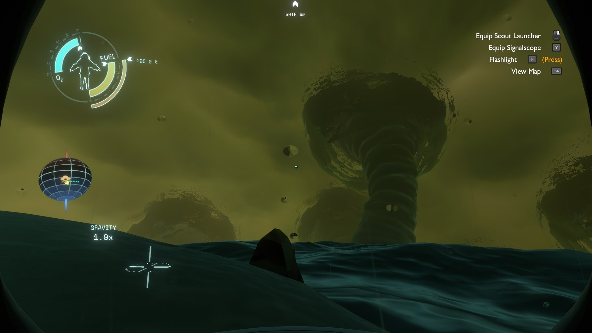
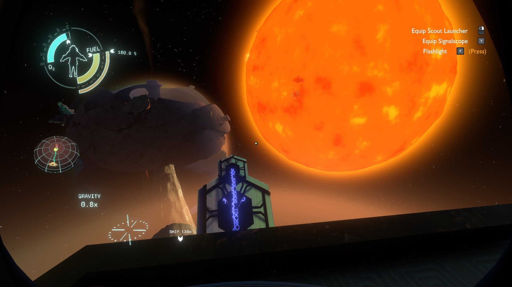
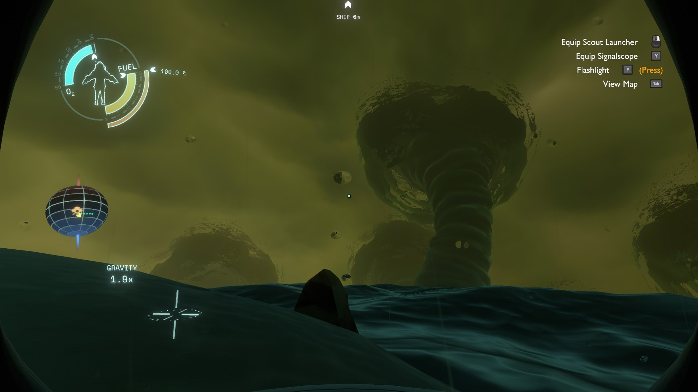
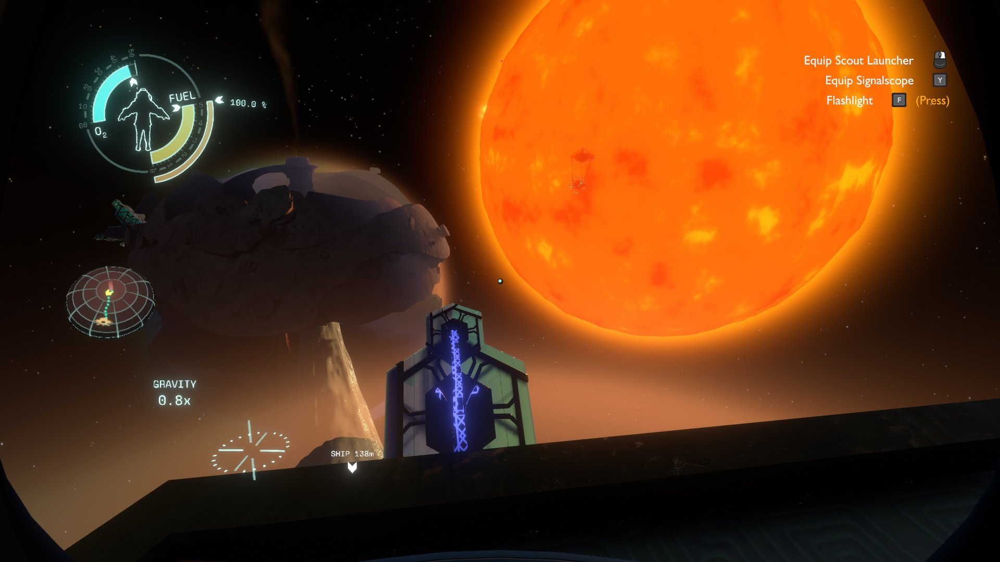

Outer wilds
Named Game of the Year 2019 by Giant Bomb, Polygon, Eurogamer, and The Guardian, Outer Wilds is a critically-acclaimed and award-winning open world mystery about a solar system trapped in an endless time loop.
Rating: Overwhelmingly Positive
Offline Open-world
Singleplayer/Multiplayer
Genre: Open world mystery
Ontwikkelaar: Mobius Digital
Uitgavedatum: 18 Jun, 2020
 




Systeemeisen
- Besturingsysteem: Windows 7
- Processor: Intel Core i5-2300 | AMD FX-4350
- Geheugen: 6 GB RAM
- Grafische kaart: Nvidia GeForce GTX 660, 2 GB | AMD Radeon HD 7870, 2 GB
- Opslagruimte: 8 GB available space